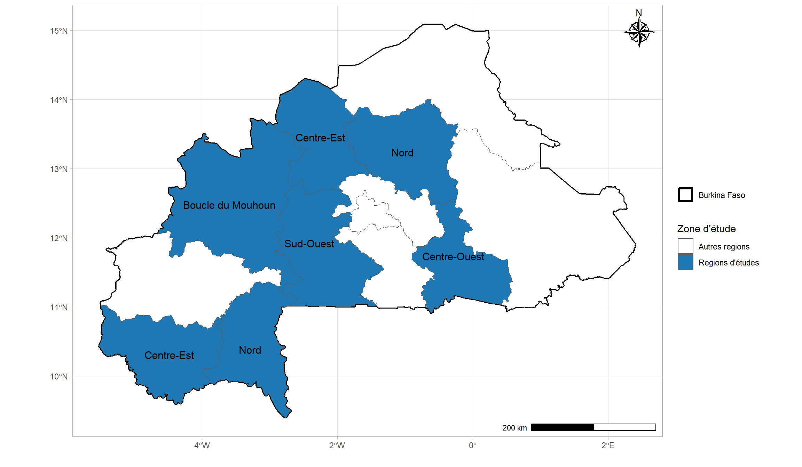
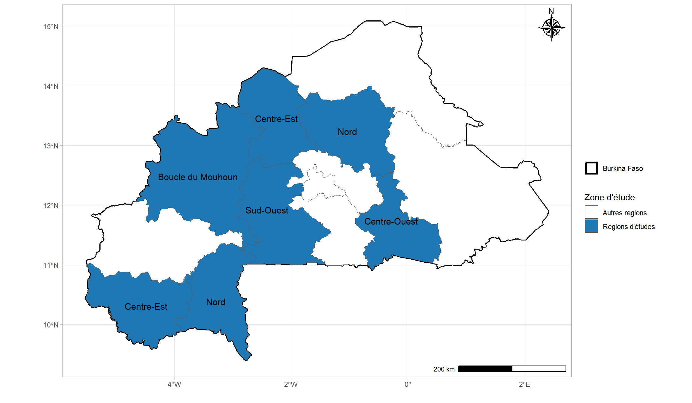

Comment faire des cartes Choroplèthes et des cartes de proportions avec R ?
Les cartes choroplèthes et les cartes de proportions sont des outils puissants pour visualiser des données géospatiales dans R. Ces cartes permettent de représenter des valeurs quantitatives (par exemple, des taux de population, des moyennes) sur des zones géographiques, souvent des régions administratives comme des départements, des communes, ou des zones géographiques personnalisées.
Introduction aux Cartes Choroplèthes et Cartes de Proportions
Les cartes choroplèthes colorient les régions géographiques en fonction de valeurs numériques ou de proportions, facilitant l’analyse spatiale et la compréhension des variations géographiques. Elles sont couramment utilisées pour des données socio-économiques, de santé publique, ou des analyses environnementales.
Les cartes de proportions sont similaires mais mettent davantage l’accent sur les ratios ou proportions par rapport à une valeur totale, comme des pourcentages ou des fractions de populations.
Notions de Base : Polygones, Shapefiles et Coordonnées Avant de créer ces cartes, il est important de comprendre quelques notions de base, comme les polygones et les shapefiles :
Polygones
Une zone géographique est souvent représentée par un polygone, une forme géométrique fermée qui peut avoir plusieurs côtés. Par exemple, une commune ou un département sur une carte peut être représentée comme un polygone.
Shapefiles
Ce sont un format de fichier standard pour stocker des informations géospatiales, y compris les coordonnées de points, de lignes et de polygones. Ils peuvent contenir les géométries des entités géographiques ainsi que leurs attributs (valeurs associées à chaque région, comme le revenu moyen ou le taux de chômage).
Coordonnées géographiques
Les coordonnées (latitude et longitude) permettent de positionner ces polygones sur une carte. En R, on utilise des systèmes de coordonnées géographiques et projetées pour gérer et visualiser ces données.
Plusieurs pakages permettent de visualiser les données avec les cartes, ici nous interessons aux packages glue et sf.
Zone d’étude
Supposons que nous menions une étude au Burkina-Faso. Par exemple, nous mésurer des indicateurs tels que le taux de mortalité, la couverture sanitaire etc … Le Burkina Faso est un pays qui compte 13 regions, mais notre etude s’étend seulement sur 8 regions. Il convient de montrer toutes les regions, puis de mettre en exègue celles qui nous concernent.
Place au code
###---- Chargement des shapefiles src = GADMroot <-getwd() ##-- la racine du repertoire##- La carte du pays sans les polygones des regions, communes et/ou departementspath0 <-paste0(root,"/DATA_SIG/BFA2/gadm41_BFA_0.shp")##- La carte du pays avec le polygone des regions, sans ceux des communes et/ou departementspath1 <-paste0(root,"/DATA_SIG/BFA2/gadm41_BFA_1.shp")##- La carte du pays avec le polygone des regions, sans ceux des communes et/ou departementspath2 <-paste0("/DATA_SIG/BFA2/gadm41_BFA_2.shp")##- La carte du pays avec le polygone des regions, sans ceux des communes et/ou departementspath3 <-paste0(root,"/DATA_SIG/BFA2/gadm41_BFA_3.shp")##-- selection des regions concernéesstudy.area <-c("Boucle du Mouhoun", "Centre-Est", "Centre-Nord","Centre-Ouest", "Nord", "Sud-Ouest","Hauts-Bassins", "Cascades")##-- lecture des shapefilespays_shp <-read_sf(glue(path0), quiet = T)region_shp <-read_sf(glue(path1), quiet = T)#commune_shp <- read_sf(glue(path2), quiet = T)#province_shp <- read_sf(glue(path3), quiet = T)##-- création d'une sous base avec les polygones des regions sélectionnésdata_region <- region_shp %>%filter(NAME_1 %in% study.area)##-- Study area colorsstudy_zone_colors <-c("#1f77b4", "#ff7f0e", "#2ca02c","#3FE1B8", "#9467bd", "#8c564b","#00008B", "#4B0082")study_zone_map <-ggplot() +geom_sf(data = pays_shp, aes(linewidth ="Burkina Faso"),fill ="white", color ="black") +geom_sf(data = region_shp, aes(fill =ifelse( NAME_1 %in% study.area,"Regions d'études","Autres regions" ) )) +geom_sf_text(data = region_shp, aes(label =ifelse( NAME_1 %in% study.area, study.area,"" )), size =4)+ ggspatial::annotation_scale(location ="br",bar_cols =c("black", "white") ) +theme_light()+ ggspatial::annotation_north_arrow(location ="tr", which_north ="true",pad_x =unit(0.05, "in"), pad_y =unit(0.05, "in"),style = ggspatial::north_arrow_nautical(fill =c("black", "white"),line_col ="black" ) )+xlab("")+ylab("")+scale_linewidth_manual(values =c(1.2), name ="")+scale_fill_manual(values =c("white",study_zone_colors), name="Zone d'étude")+theme_light() +guides(linewidth =guide_legend(order =1),fill =guide_legend(order =2),color =guide_legend(order =3) )
study_zone_map

Cartographie de la zone d’étude
Expliquons le code à présent
Charger les fichier shapefiles :
glue : pour preparer la structure du format (optionnel)
readsf : pour lire les fichiers shapefiles
Definir la zone d’étude : les fichier shapefile devient comme un dataframe, donc est manipulable au même titre que les fichiers excel, csv etc…
Tableau 1 : Individus ayant un cosinus carré supérieur ou égal à 0,85 sur l'axe 1
Comment faire des cartes Choroplèthes et des cartes de proportions avec R ?
Les cartes choroplèthes et les cartes de proportions sont des outils puissants pour visualiser des données géospatiales dans R. Ces cartes permettent de représenter des valeurs quantitatives (par exemple, des taux de population, des moyennes) sur des zones géographiques, souvent des régions administratives comme des départements, des communes, ou des zones géographiques personnalisées.
Les cartes choroplèthes colorient les régions géographiques en fonction de valeurs numériques ou de proportions, facilitant l’analyse spatiale et la compréhension des variations géographiques. Elles sont couramment utilisées pour des données socio-économiques, de santé publique, ou des analyses environnementales.
Les cartes de proportions sont similaires mais mettent davantage l’accent sur les ratios ou proportions par rapport à une valeur totale, comme des pourcentages ou des fractions de populations.
Une zone géographique est souvent représentée par un polygone, une forme géométrique fermée qui peut avoir plusieurs côtés. Par exemple, une commune ou un département sur une carte peut être représentée comme un polygone.
Ce sont un format de fichier standard pour stocker des informations géospatiales, y compris les coordonnées de points, de lignes et de polygones. Ils peuvent contenir les géométries des entités géographiques ainsi que leurs attributs (valeurs associées à chaque région, comme le revenu moyen ou le taux de chômage).
Les coordonnées (latitude et longitude) permettent de positionner ces polygones sur une carte. En R, on utilise des systèmes de coordonnées géographiques et projetées pour gérer et visualiser ces données.
Plusieurs pakages permettent de visualiser les données avec les cartes, ici nous interessons aux packages glue et sf.
Supposons que nous menions une étude au Burkina-Faso. Par exemple, nous mésurer des indicateurs tels que le taux de mortalité, la couverture sanitaire etc … Le Burkina Faso est un pays qui compte 13 regions, mais notre etude s’étend seulement sur 8 regions. Il convient de montrer toutes les regions, puis de mettre en exègue celles qui nous concernent.

Retour à la page d’accueuil